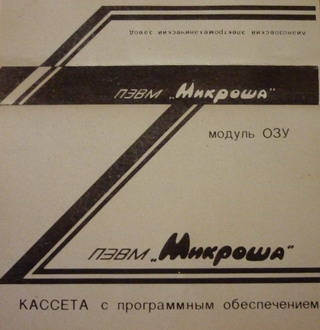
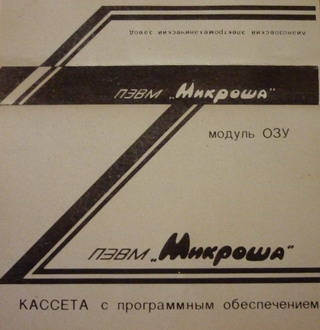
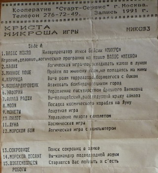
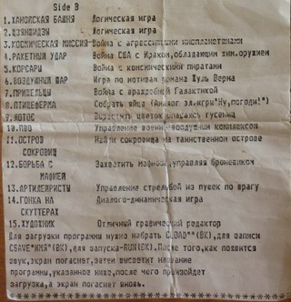

Тест модуля ОЗУ, Бейсик "Плюс", Макроассемблер


Скачать программы (kas01.zip 12 кб)
http://home.onego.ru/~bav9/94.html
Требуется доработка
Кассета с программным обеспечением. Модуль ОЗУ
Тест модуля ОЗУ, Бейсик "Плюс", Макроассемблер

Скачать программы (kas01.zip 12 кб)
24.
**из коллекции Владимира Б. (С-Пб)
Игровые :
ambush
borodino
boulder2
castle
hell
house
lazer
mirage
patrul
peshera
planeta
podzem
pusher
pusher21
rocker
runs
scwash
store
xball
morskoy (запуск - G ВК RUN ВК )
Системные :
renumer
centronix.tx - текст в формате ред.Микрон (в эмуляторе - загрузить ED*MICRON*, затем - ESC+I Enter - выбор файла)
Скачать программы (kas02.zip 77 кб)
25.
**из коллекции Владимира Б. (С-Пб)
Игровые на Basic "Micro" V.02:
(Загрузить в эмулятор Basic, ввести директиву CLOAD"" и Enter, выбрать файл, после загрузки - RUN Enter)
 
Скачать программы (kas03.zip 99 кб)
26.
**из коллекции Владимира Б. (С-Пб)
Игровые :
airplane
arnold
buble
fly
gorodki
iraq91
jump
km
newspace
ohotnik
pac-hall
pingpong
pit
pryg
robo
rojer
sokol
speed
tank
utka
Скачать программы (kas04.zip 45 кб)
27.
**из коллекции Владимира Б. (С-Пб)
Программы для работы с музыкой :
Музыкальная система, Музыкальная шкатулка, Музыкальный диктант, Музыкальный редактор, Музыкальный салон
Скачать программы (kas05.zip 30 кб)
28.
**из коллекции Владимира Б. (С-Пб)
Игровые :
borodino
caches
columns
digger
digger1
digger2
gonki
powerboat (+powerboat 2 уровень код ВАСЯ + powerboat 3 уровень код БОМЖ)
rise1
shahmaty
superalex
supertetris
Прикладные
DBmai1
edBdash
supercalc
Скачать программы (kas06.zip 88 кб)
29.
**из коллекции Владимира Б. (С-Пб)
Игровые :
atakatankov
badroad
basketball
bombiozhka
demise
downman
elf
gelmut
golovolomka
goroskop
jokey
landing
looksharp
lotos
lovushka
minnoepole
namnam
nlo
ochko
pentamino
pifpaf
richi-rachi
ring
starrysky
satusquo
tennos
uzory
xonix
xonix4
Скачать программы (kas07.zip 69 кб)
30.
**из коллекции Владимира Б. (С-Пб)
Игровые :
blacklabirint
caches
gold
kamnehavchik
landofmaze
loderunner
loderunner2
magiccross
othello
perestrelka
skachki
stakan
torpednaiaataka
trekralli
Системные
fortLS1 (запуск - G33AC) (+программы на Форте - lawleis, tetris)
Скачать программы (kas08.zip 69 кб)
31.
**из коллекции Владимира Б. (С-Пб)
Игровые :
arcanoid
cybernoid
formula
gonka
lazer
moonpatrul
perelet
polechudes
room
samolet
shahta
shtab
stalker
Скачать программы (kas09.zip 52 кб)
32.
**из коллекции Владимира Б. (С-Пб)
Игровые :
power boat (+дополнительные уровни 2, 3, 4, 5)
Скачать программы (kas10.zip 19 кб)
33.
**из коллекции Владимира Б. (С-Пб)
Игровые :
attack
krot
labirint
maze
pvo-87
sad
scaloed
stalaktity
woor
Скачать программы (kas11.zip 18 кб)
34.
**из коллекции Владимира Б. (С-Пб)
Игровые на Basic "Micro" V.02, Basic Микроша, Basic Mikron, Basic Plus
(Загрузить в эмулятор Basic, ввести директиву CLOAD"" и Enter, выбрать файл, после загрузки - RUN Enter)
Скачать программы (kas12.zip 122 кб)
35.
**из коллекции Владимира Б. (С-Пб)
Системные :
macro-580
monit-m
poisk
programmator
redtext
zadachi
Скачать программы (kas13.zip 16 кб)
36.
**из коллекции Владимира Б. (С-Пб)
Игровые :
boulder
chasy
chess
jump
pit
robotsland
runman
shahmaty
speedway
stopkran
vashhod
Скачать программы (kas14.zip 71 кб)
37.
**из коллекции Владимира Б. (С-Пб)
Системные :
basic best
bbest1 (bbest2,bbest3) - инструкция к Basic Best
reclama (на Basic Best)
adapter_rk
forth
monitor80
muzsalon
Скачать программы (kas15.zip 55 кб)
38.
**из коллекции Владимира Б. (С-Пб)
Игровые :
ataka
away
ball
barman
boa-sp
bomber
gonki
gorynych
katalog1
katalog2
liquidsky
meshanina
othello
pentis
pif
redflower
road
sad
saper1
saper2
skachki
slams
snake
spysdemise
stakan
stf32-1
torpeda
tulpan
volkano
zhizn
Скачать программы (kas16.zip 79 кб)
39.
**из коллекции Владимира Б. (С-Пб)
Игровые :
chpi86
demise
downman
froggy
gelmit-u
golovolomka
goroskop
kommutator3
kungfu
labirint2
lotos
lovushka
mars
minpole
nlo
ochko
packman2
packman9
pacman
pentamino
pifpaf
pingpong
pomestam
ralli
richi
shahmat_chasy
skald
skald_instr
statusquo
submarine
tankatak
taskat1
taskar2
taskat3
tennis
tennis2
tetris2
trassa
tulpan
xonix
xonix2
zycaps
zycaps1e
zycaps2e
zycaps3e
Системные :
basic-apogey
basic-ips
best-editor
chasy
imagemaker
imagemaker_instr
redtekst
zagr_rk86
Скачать программы (kas17.zip 147 кб)
40.
**из коллекции Владимира Б. (С-Пб)
Игровые :
boks
faraon
lestnica2
mars
monster
ricoshet
sfinks
skaloed
snakes
sprint
stelbi
strangers
flight
На Basic-plus:
ipodrom
krepost
pticeferma
На Микроша-basic:
krestik
Скачать программы (kas18.zip 44 кб)
41.
**из коллекции Владимира Б. (С-Пб)
Игровые :
othello
На Basic-Micro v.02:
biznes
Системные :
adapter_rk
basic_best (+instr1_bbest +instr2_bbest - инструкции на basic-best)
cvetomus
driver_mag
inst_cvet
koder_m
meditor
monit_ozu
mussalon
poisk
red_pamati
red_strtxt
Скачать программы (kas19.zip 76 кб)
42.
**из коллекции Владимира Б. (С-Пб)
Системные :
kompl_test (На Basic-Micron)
demo_c (На Best-c)
basic-expanded
glasolalia
instr_info
info
kass_red
reclama
Игровые :
zvezd_monop (на basic-expanded)
airoplan2
beg
blackwork
diskent
kaleidoskop
pacman_c
pit
piton_z
runman
Скачать программы (kas20.zip 52 кб)